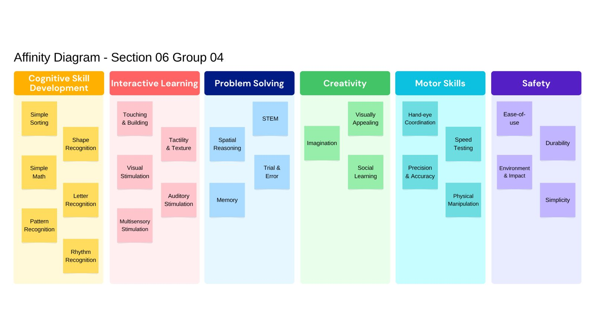
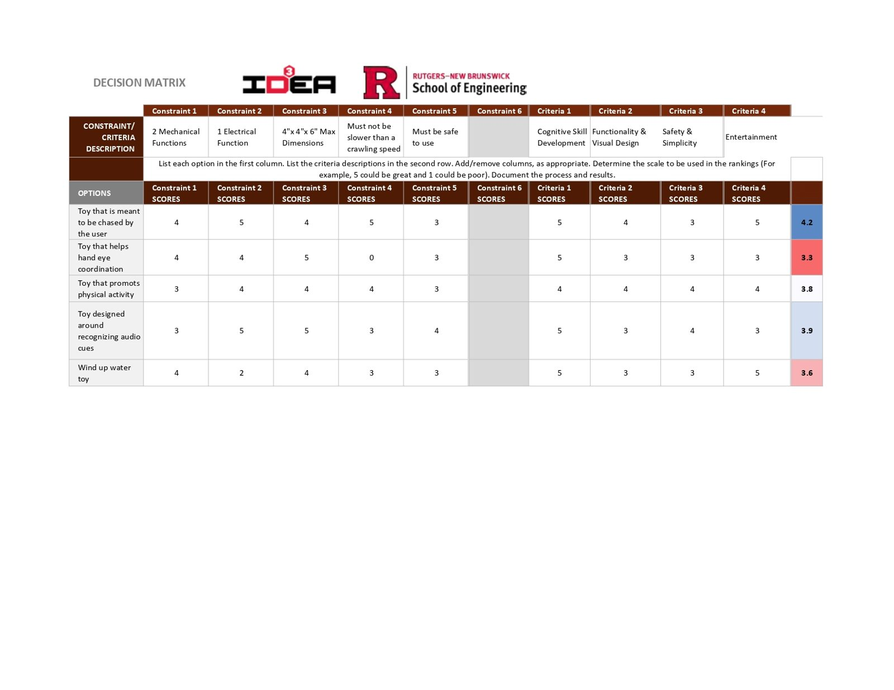
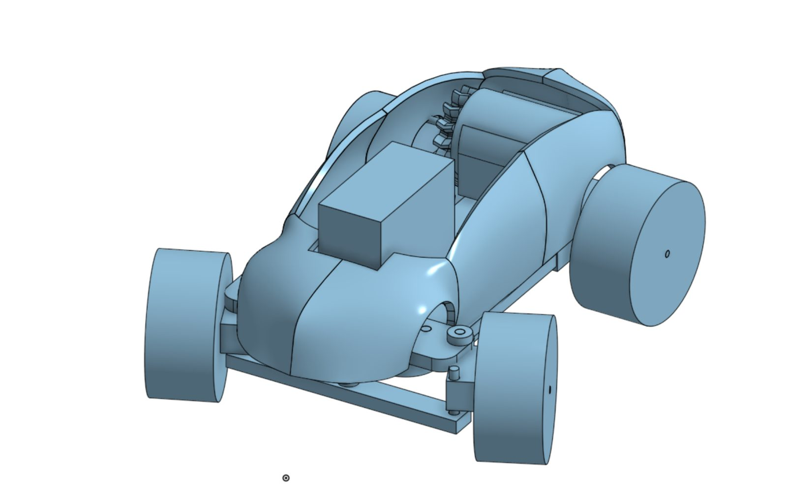
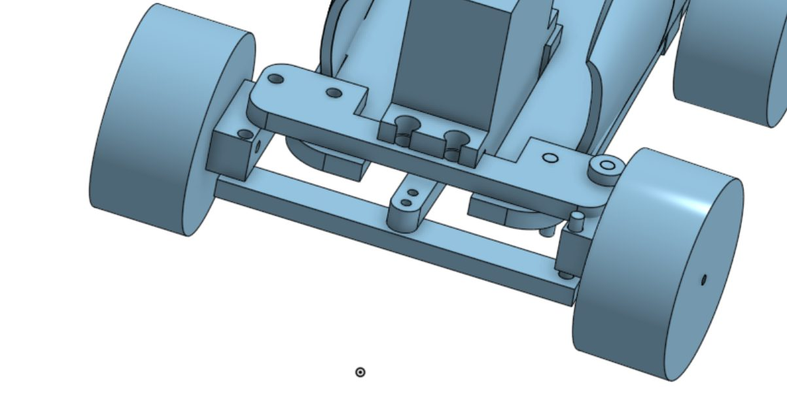
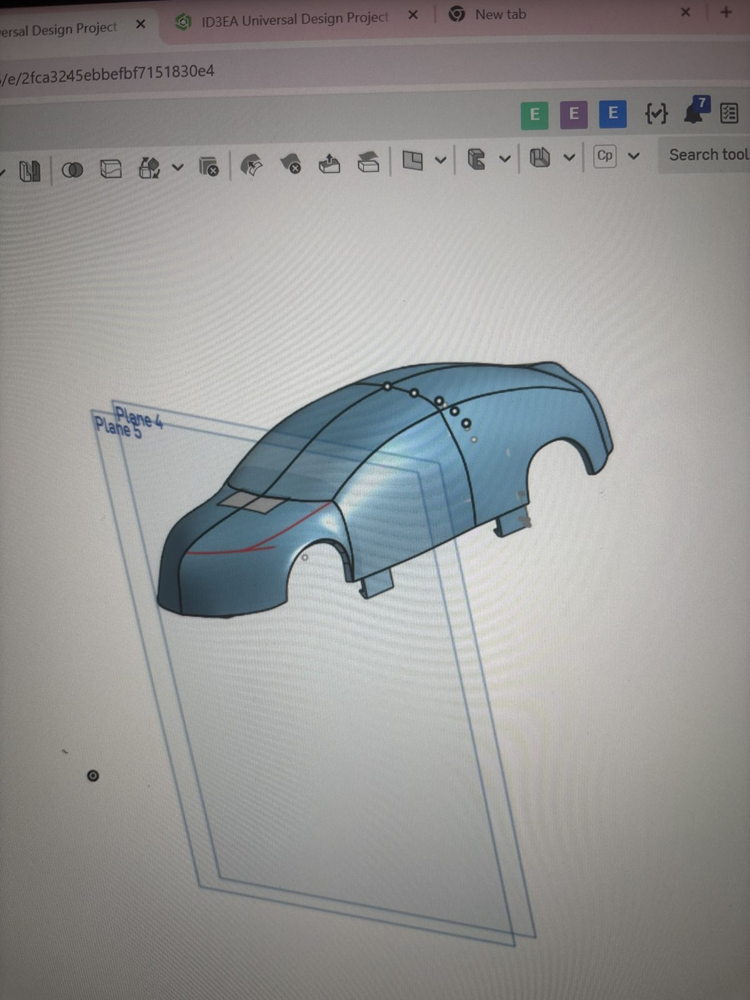
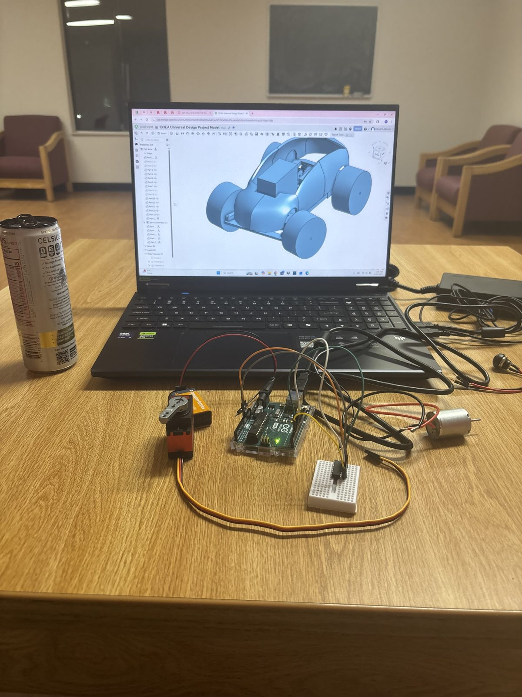
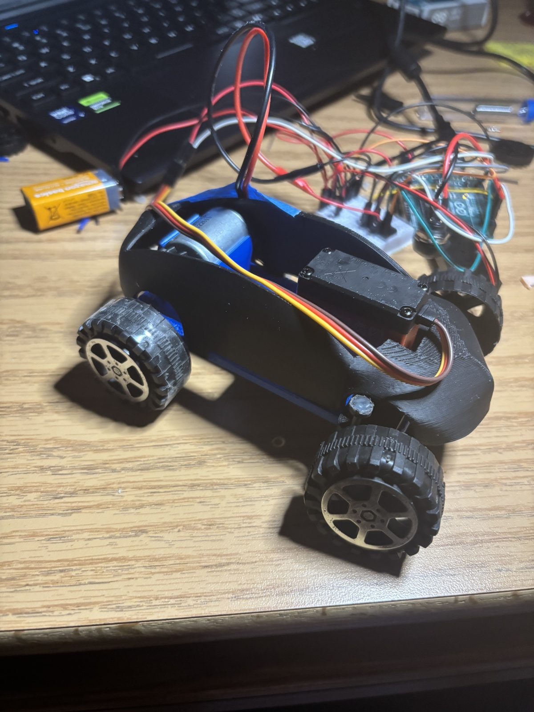
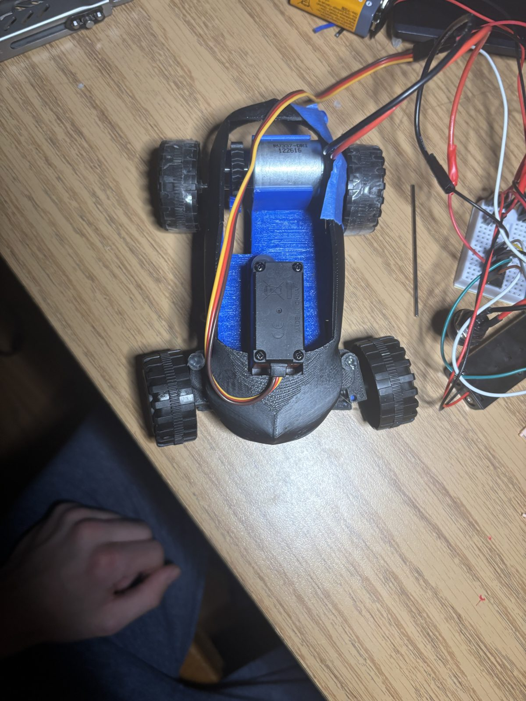

Overview
Our team was asked to design a toy following the universal design principles, so that users of all abilities can use it. Younger children have limited hand-eye coordination, so we built a toy that runs away from the child and changes direction at random. To catch it, the child has to crawl or walk after it and predict where it's going next. That builds motor, cognitive, and problem-solving skills.
I took the lead on the Onshape CAD model, the Arduino programming, and integrating the electronics into the car.
Design process
We started with research and a needs assessment. We grouped user needs in an affinity diagram (cognitive skill development, interactive learning, problem solving, creativity, motor skills, and safety), then scored concepts in a decision matrix. Other ideas included a physical activity toy, an audio-cue toy, and a wind-up water toy. The "chase me" car scored highest overall, especially on being faster than crawling speed and on cognitive development.


| Criteria (goals) | Constraints (fixed) |
|---|---|
| Cognitive skill development | At least 2 mechanical functions |
| Functionality & visual design | At least 1 electrical function |
| Safety & simplicity | Fits in 4″ × 4″ × 6″ |
| Entertainment | No slower than crawling speed; safe to use |
CAD & mechanics
The car has four main parts, all modeled in Onshape:
- Motor assembly: a DC motor drives a gear train that spins the rear axle.
- Servo steering: a linkage based on how RC cars steer. All the holes are pin joints, so both front wheels turn together as the servo rotates.
- Base: everything mounts to it, and it detaches from the body so the gears, circuit, and servo are easy to reach.
- Body: loosely styled on a sedan, in two bright colors, so kids can spot it easily and it sparks their imagination.


I sliced the parts in Bambu Studio and printed them in PLA (62 g total). Rigid joints use tight-fitting pins secured with hot glue. Rotating joints use free pins with glued caps so the pins can't slide out. The biggest change between versions was a large cutout in the top of the body, which gave the motor, servo, and Arduino the clearance they needed.

Electronics & code
An Arduino controls a DC motor and a servo from a single push button, which keeps the toy simple for a child to use. The Arduino detects the voltage change when the button is pressed:
- Press once: the DC motor runs continuously, and the servo steers to a random angle from a random number generator, so the car's path is different every time.
- Press again: everything stops.
The components were wired in parallel to keep the required voltage down. A 3 V and a 9 V battery were connected in series to supply enough voltage for the system.
Testing
We tested speed on different surfaces and battery levels, and dropped the car from three heights.
| Test | Condition | Result |
|---|---|---|
| Speed | Full battery | 0.5 m/s |
| Speed | Low battery | 0.1 m/s |
| Surface | Carpet vs. smooth floor | 3–5× slower on carpet |
| Drop | 2″ and 4″ | No damage |
| Drop | 6″ | Body intact, servo linkage broke |
The car met the size and function constraints. It also beats the crawling speed of younger kids, though older kids in the age range can probably keep up.
Lessons learned
- Weight distribution matters. The motor, Arduino, and servo pressed down hard on the base, which made rough surfaces difficult. We added double-sided tape to the tires for traction.
- Measure before you model. Guessing the dimensions of the motor and servo made the body hard to size. Getting tolerances right took several print iterations.
- Material choice. PLA with thin infill cracked under stress. A stronger material would hold up better for a kids' toy.

The finished car

